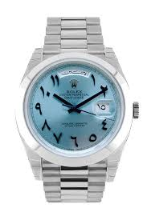
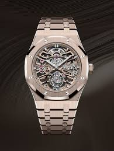
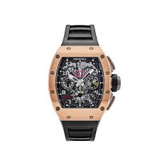

Our Luxury Products
Rolex
The Rolex Day-Date 40 with an Ice Blue dial and Arabic numerals is a symbol of luxury and precision. Crafted from Rolex's proprietary 950 platinum, this watch exudes sophistication with its sleek 40mm case, offering a perfect balance between elegance and presence. The Ice Blue dial, exclusive to Rolex's platinum models, features distinctive Arabic numerals that enhance its modern yet timeless aesthetic. The Day-Date 40 is powered by Rolex's caliber 3255 movement, ensuring exceptional accuracy and reliability. Renowned as the "President's Watch," it features the iconic day display at 12 o'clock and date at 3 o'clock, showcasing the brand's commitment to functionality and style. With its smooth, fluted bezel and Oyster bracelet, the Rolex Day-Date 40 Ice Blue Arabic Numerals stands as a prestigious timepiece, representing the pinnacle of horological excellence.
Audemars Piquet
The Audemars Piguet Royal Oak is an iconic luxury watch that redefined the world of high-end timepieces with its groundbreaking design. Introduced in 1972, the Royal Oak was the first luxury sports watch to be crafted from stainless steel, featuring a bold octagonal bezel with exposed screws, which has since become its signature look. The 41mm case, often available in materials like stainless steel, gold, or platinum, houses a detailed "Tapisserie" patterned dial, adding depth and texture to its sophisticated design. The integrated bracelet, seamlessly flowing from the case, enhances its unique aesthetic and comfort on the wrist. Powered by a finely engineered automatic movement, the Royal Oak delivers exceptional precision and reliability. With its blend of innovative design and meticulous craftsmanship, the Audemars Piguet Royal Oak remains a symbol of avant-garde style and horological mastery, cherished by collectors and watch enthusiasts worldwide.
Richard millie
The Richard Mille RM 011 Felipe Massa Chronograph in Rose Gold is a striking fusion of cutting-edge technology and avant-garde design. Named after the renowned Formula 1 driver Felipe Massa, this timepiece reflects the high-performance engineering of the racing world. The RM 011 features a robust tonneau-shaped case crafted from luxurious 18k rose gold, measuring 50mm x 40mm, which gives it a bold and distinctive presence on the wrist. The skeletonized dial showcases the intricate inner workings of the automatic flyback chronograph movement, a hallmark of Richard Mille's commitment to innovation and precision. The watch is equipped with a range of advanced functions, including an annual calendar, countdown timer, and oversized date display. With its sporty yet luxurious aesthetic, the RM 011 Felipe Massa Chronograph in Rose Gold exemplifies the brand's ethos of combining horological artistry with the high standards of performance, making it a coveted piece among collectors and enthusiasts alike.
Services
- Personal Shopping Assistance
- Gift Wrapping Services
- Worldwide Shipping